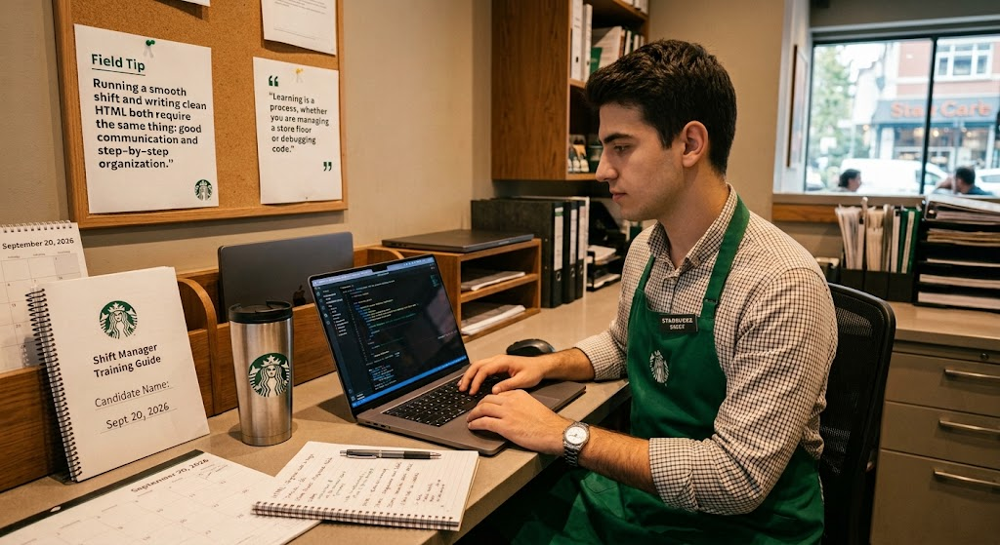

About Me and Purpose of This Site
Hi! The main purpose of this website is to complete my web development class project while sharing my experience in Starbucks Store Management during the academic term.
Managing full store operations while keeping up with my studies can be challenging, but the joy of continuous learning keeps everything in balance.

Personal note on balancing work and university
"Balancing store management responsibilities with university classes isn't easy, but staying focused on personal growth makes every long day worth it."